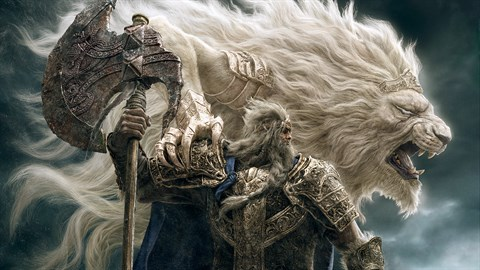
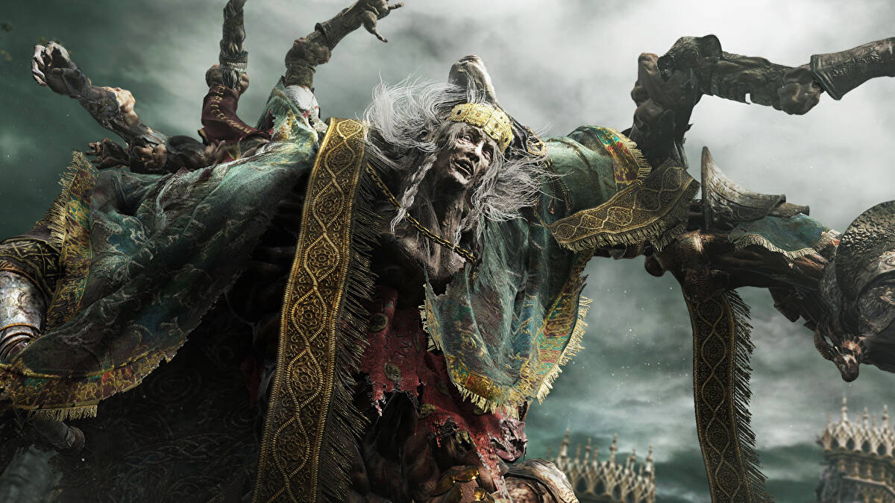
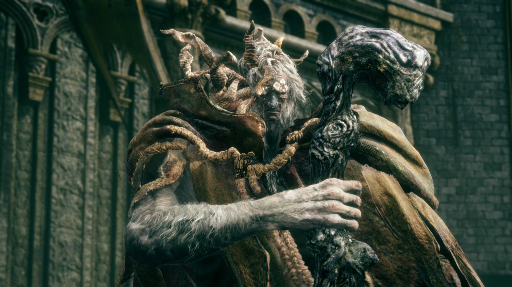

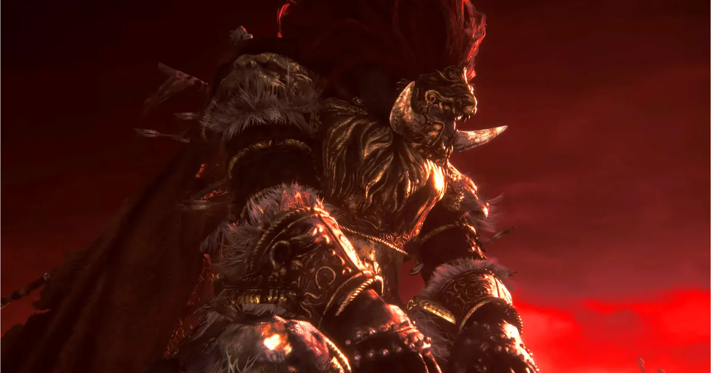
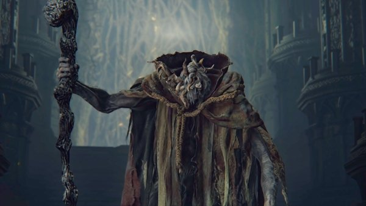
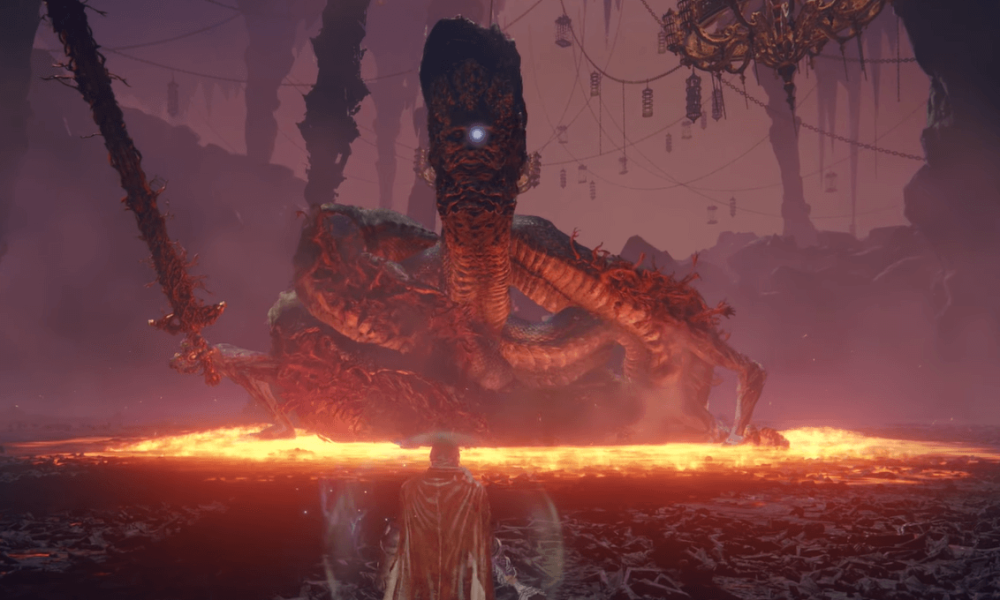
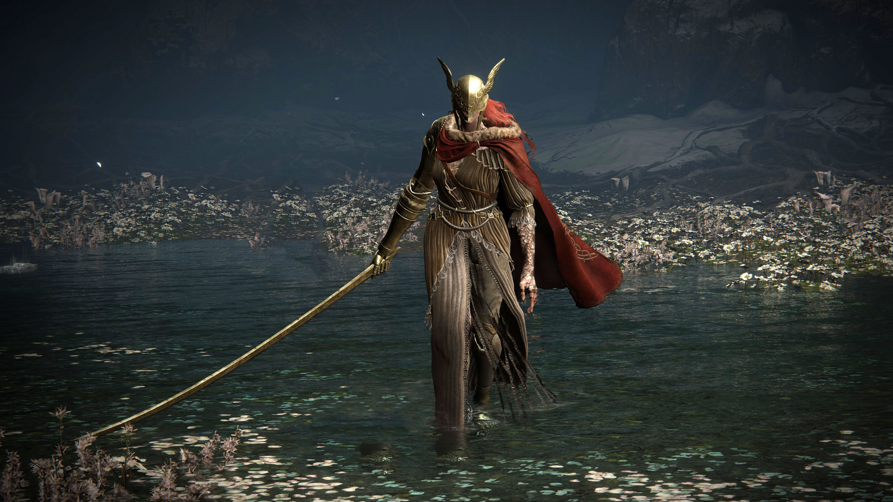
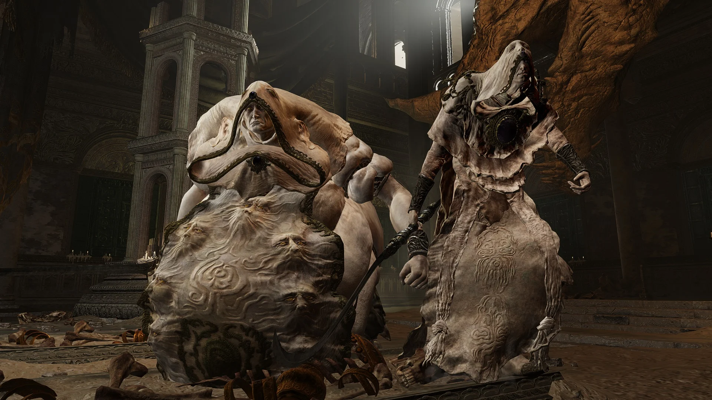
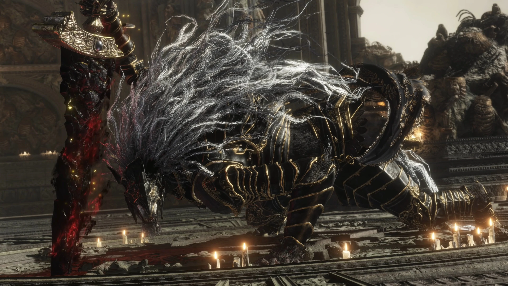
.webp)
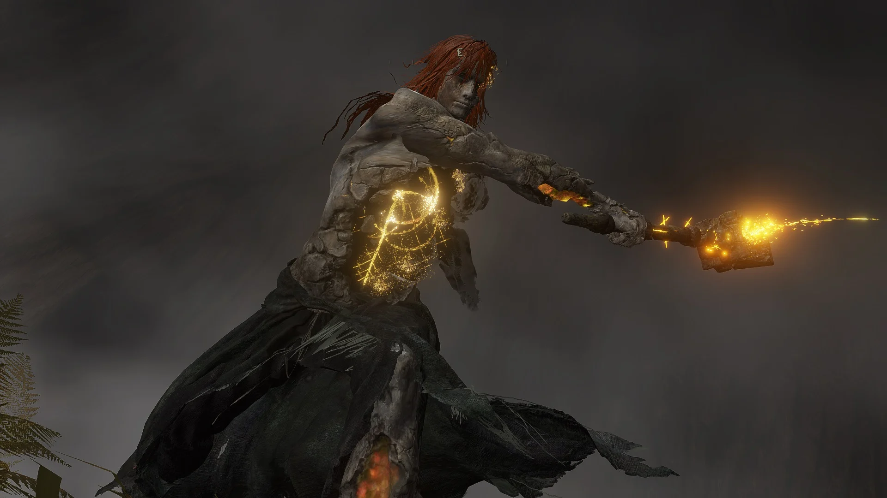
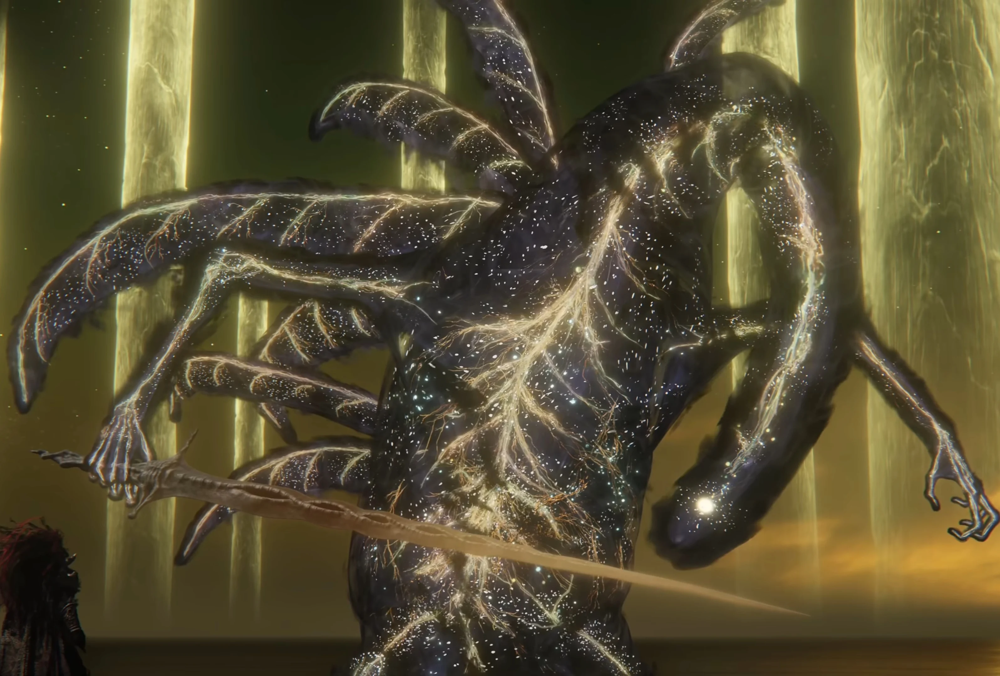
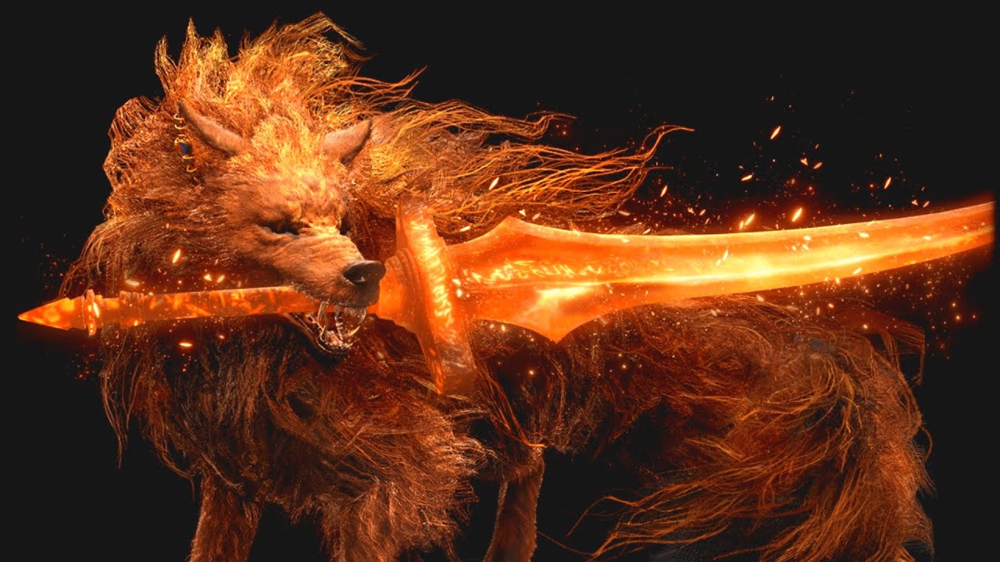
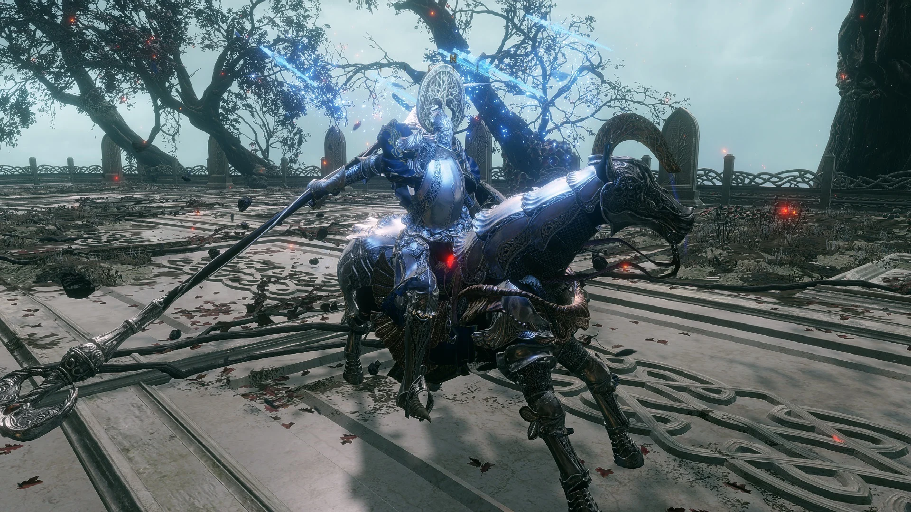
Elden Ring is an upcoming action role-playing video game developed by FromSoftware and published by Bandai Namco Entertainment. The game is highly anticipated by fans of the developer, as it marks their first release since the critically acclaimed Sekiro: Shadows Die Twice in 2019. Additionally, it has been the subject of much speculation and hype due to its unique collaboration with acclaimed fantasy novelist George R.R. Martin. The game is set in a fictional world created by Hidetaka Miyazaki, the director of the game, and George R.R. Martin, the writer of the game's lore. The world of Elden Ring is known as The Lands Between, and it is a vast and expansive world filled with dangerous enemies and challenging bosses. The game's story revolves around the player character, known as the Tarnished, who is on a quest to become the Elden Lord, the ruler of The Lands Between. Elden Ring is expected to be similar to FromSoftware's previous titles, such as Dark Souls and Bloodborne, in terms of gameplay. It is expected to be a challenging game that requires patience, skill, and strategy to complete. Players will be able to customize their character's appearance and abilities, and they will be able to choose from a variety of weapons and armor to aid them in their journey. One of the unique features of Elden Ring is the ability to summon spirits called Spirits of the Elden Ring to assist the player in battle. These spirits can be found throughout the game and can be summoned to aid the player in combat. Additionally, the game will feature an open-world design, allowing players to explore The Lands Between at their own pace and uncover its many secrets. The game's announcement trailer, released in 2019, showcased the game's stunning visuals and atmospheric soundtrack. FromSoftware is known for its attention to detail when it comes to world-building and atmosphere, and Elden Ring is no exception. The game's world is filled with unique and interesting locations, such as ancient ruins and mystical forests, and the soundtrack is sure to enhance the player's experience. In conclusion, Elden Ring is one of the most highly anticipated video games of 2022. Its collaboration with George R.R. Martin has only increased the hype surrounding the game, and its unique features, such as the Spirits of the Elden Ring and open-world design, are sure to make it a memorable experience for players. Fans of FromSoftware's previous titles will undoubtedly enjoy Elden Ring, and it may even attract new fans to the genre.












